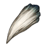
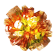
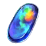
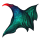
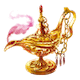

Dragon Fang

Evil Bone

Proof of Hero

Void Dust

Stake of Wailing Night

Seed of Yggdrasil

Ghost Lanturn

Octuplet Crystal

Serpent Jewel

Phoenix Feather

Eternal Gear

Forbidden Page

Homunculus Baby
Great Knight Medal

Shell of Reminiscense

Giant's Ring

Aurora Steel

Soundless Bell

Crown of Silvery Light

Divine Leyline Spiritron

Dragon's Reverse Scale

Spirit Root

Warhorse's Young Horn

Bloodstone Tear

Black Tallow

Lamp of Evil-Sealing

Scarab of Wisdom

Fruit of Eternity
Primordial Lanugo